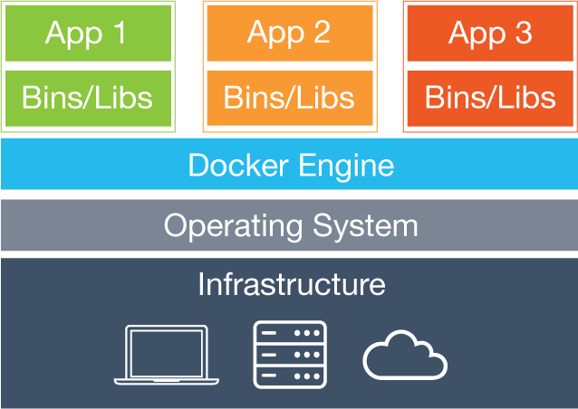
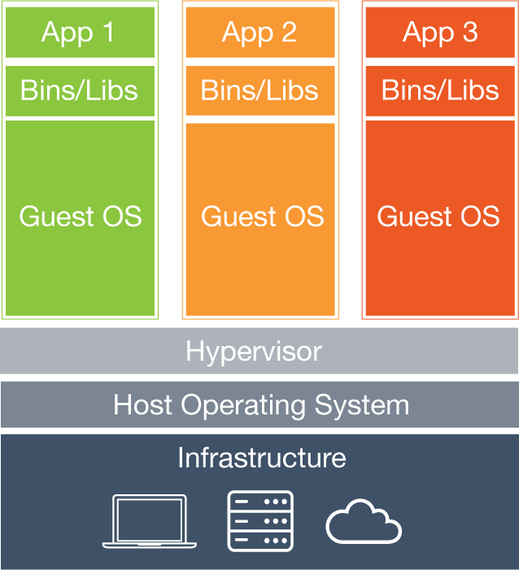
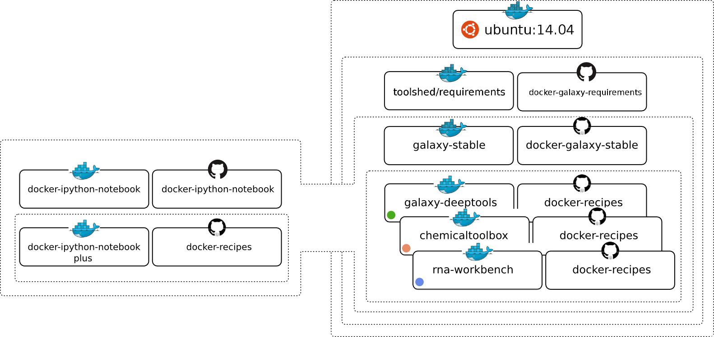
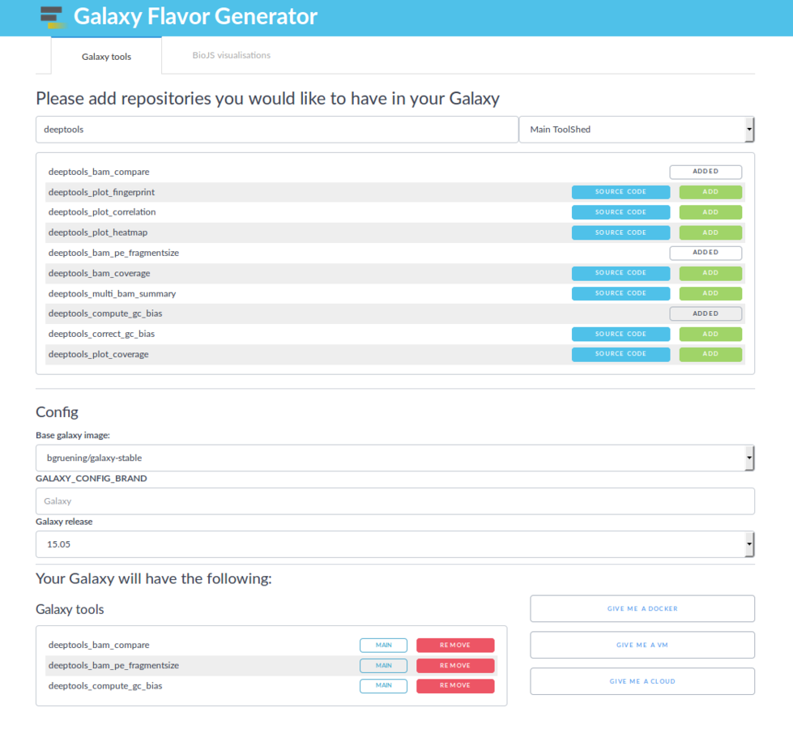

<!doctype html>
<html lang="en">

	<head>
		<meta charset="utf-8">

		<title>Docker and Galaxy</title>

		<link rel="stylesheet" href="../../assets/reveal.js/css/reveal.css">
		<link rel="stylesheet" href="../../assets/reveal.js/css/theme/simple.css" id="theme">

		<!-- Code syntax highlighting -->
		<link rel="stylesheet" href="../../assets/reveal.js/lib/css/zenburn.css">
        <link rel="stylesheet" href="../../assets/css/font-awesome.css">
		<link rel="stylesheet" href="../../assets/css/slide_custom.css" id="theme">

		<!-- Printing and PDF exports -->
        <script>
          if( window.location.search.match( /print-pdf/gi ) ) {
            var link = document.createElement( 'link' );
            link.rel = 'stylesheet';
            link.type = 'text/css';
            link.href = '../../assets/reveal.js/css/print/pdf.css';
            document.getElementsByTagName( 'head' )[0].appendChild( link );
          }
        </script>
		<!--<script>
            if (window.location.search.match(/print-pdf/gi)) {
                document.write('<link rel="stylesheet" href="css/pdf.css" type="text/css">');
            }
        </script>-->

		<!--[if lt IE 9]>
        <script src="../../assets/reveal.js/lib/js/html5shiv.js"></script>
        <![endif]-->
	</head>

	<body>
		<div class="reveal">
            <div class="slides">
                <section data-markdown>
                    <script type="text/template">
                        ## Welcome!

                        

                        The easiest way to **navigate** this slide deck
                        is **by hitting `[space]` on your keyboard**

                        You can also navigate with arrow keys, but be careful because some
                        slides can be nested inside of each other (vertically)
                    </script>
                </section>
				<section data-markdown>
					<script type="text/template">
						## Preparation

						* docker pull quay.io/bgruening/galaxy:gcc2016
						* docker pull quay.io/bgruening/galaxy-docs-slurm:gcc2016
						* git clone -b gcc2016 https://github.com/bgruening/docker-galaxy-stable.git
					</script>
				</section>
				<section data-markdown>
					<script type="text/template">
						## Outline

						* Docker basics
						* Galaxy Docker image (usage)
						* Galaxy Docker (internals)
						* Galaxy flavours

						Here you will learn the internals of the Docker Galaxy Image.
						We will show you tips and tricks on how to run the Galaxy Docker
						Image successfully in production, how to manage updates and how
						to bind the container to a cluster scheduler. Moreover,
						you will learn how to create your own Galaxy flavour mixing a
						variety of different tools and visualisations.

					</script>
				</section>

				<section data-markdown>
					<script type="text/template">
						##Container vs. VM
						
						
					</script>
				</section>

				<section>
				<!-- Docker basics section -->
				<section data-markdown>
					<script type="text/template">
						##Docker basics
						

					</script>
				</section>

				<section data-markdown>
					<script type="text/template">
						## Container lifecycle

						* containers vs. image
						* data persistence
						* mounting volumes
					</script>
				</section>
				<section data-markdown>
					<script type="text/template">
					## pull

					* docker pull hello-world
					* docker pull docker/whalesay
					* docker pull bgruening/galaxy-stable:16.01
					* docker pull quay.io/bgruening/galaxy
					* docker images
					</script>
				</section>

				<section data-markdown>
					<script type="text/template">
						## run

<pre><code style="font-size: .8em; line-height: 1em; max-height: 500px;">
bag@bag:~$ docker run hello-world

Hello from Docker.
This message shows that your installation appears to be working correctly.

To generate this message, Docker took the following steps:
	 1. The Docker client contacted the Docker daemon.
	 2. The Docker daemon pulled the "hello-world" image from the Docker Hub.
	 3. The Docker daemon created a new container from that image which runs the
	    executable that produces the output you are currently reading.
	 4. The Docker daemon streamed that output to the Docker client, which sent it
	    to your terminal.

	To try something more ambitious, you can run an Ubuntu container with:
	 $ docker run -it ubuntu bash

	Share images, automate workflows, and more with a free Docker Hub account:
	https://hub.docker.com

	For more examples and ideas, visit:
	https://docs.docker.com/engine/userguide/

</code></pre>
				</script>
			</section>


			<section data-markdown>
				<script type="text/template">
					 ## run
```
% docker run docker/whalesay cowsay Galaxy
 	________
	< Galaxy >
	 --------
	    \
	     \
	      \
	                    ##        .
	              ## ## ##       ==
	           ## ## ## ##      ===
	       /""""""""""""""""___/ ===
	  ~~~ {~~ ~~~~ ~~~ ~~~~ ~~ ~ /  ===- ~~~
	       \______ o          __/
	        \    \        __/
	          \____\______/


```
					</script>
				</section>
				<section data-markdown>
   					<script type="text/template">
						## run
<pre><code style="font-size: .8em; line-height: 1em; max-height: 500px;">
Usage:	docker run [OPTIONS] IMAGE [COMMAND] [ARG...]

Run a command in a new container

  -a, --attach=[]                 Attach to STDIN, STDOUT or STDERR
  --add-host=[]                   Add a custom host-to-IP mapping (host:ip)
  --cpu-shares                    CPU shares (relative weight)
  ...
  -d, --detach                    Run container in background and print container ID

  -e, --env=[]                    Set environment variables
  --entrypoint                    Overwrite the default ENTRYPOINT of the image
  --env-file=[]                   Read in a file of environment variables
  ...
  -h, --hostname                  Container host name
  -i, --interactive               Keep STDIN open even if not attached
  --name                          Assign a name to the container
  --net=default                   Connect a container to a network
  ...
  -P, --publish-all               Publish all exposed ports to random ports
  -p, --publish=[]                Publish a container's port(s) to the host
  --privileged                    Give extended privileges to this container
  --rm                            Automatically remove the container when it exits
  -t, --tty                       Allocate a pseudo-TTY
  -v, --volume=[]                 Bind mount a volume
  ...
</code></pre>
					</script>
				</section>
				<section data-markdown>
   					<script type="text/template">
						## Control during startup
```
% docker run -i -t
    -p 8080:80 -p 8021:21 -p 9002:9002
    -v /home/user/galaxy_storage/:/export/
    --privileged=true
    -e "NONUSE=reports"
    -e "GALAXY_CONFIG_ADMIN_USERS=albert@einstein.gov"
    -e "GALAXY_CONFIG_MASTER_API_KEY=83D4jaba7330aDKHkakjGa937"
    -e "GALAXY_CONFIG_BRAND='My own Galaxy flavour'"
    -e "GALAXY_LOGGING=full"

    quay.io/bgruening/galaxy
```
					</script>
				</section>
				<section data-markdown>
					<script type="text/template">
						## exec
						Run a command in a running container

```
% docker exec <container name> supervisorctl restart galaxy:
```
					</script>
				</section>

				<section data-markdown>
					<script type="text/template">
						## stop

						Stop a running container.
						Sending SIGTERM and then SIGKILL after a grace period
```
% docker stop <container name>
```
					</script>
				</section>

				<section data-markdown>
					<script type="text/template">
						## build

						Build an image from a Dockerfile
```
% docker build -t image_name <Dockerfile>```
					</script>
				</section>
				<section data-markdown>
					<script type="text/template">
						## ps

						List containers
```
% docker ps
```
					</script>
				</section>
				<!-- close Docker basic section -->
				</section>
				<section>
				<section data-markdown>
					<script type="text/template">
						## Galaxy Docker Container
						https://github.com/bgruening/docker-galaxy-stable

						* FTP-Server
						* Webserver
						* Scheduler
						* Process control UI
						* ToolShed ready
						* Interactive Environment ready

```
docker run -i -t -p 8080:80 quay.io/bgruening/galaxy:gcc2016
```
doi: 10.5281/zenodo.51627
					</script>
				</section>

				<section data-markdown>
					<script type="text/template">
						## Things to try

						* adding Data
						* integrated FTP server
						* becoming an Admin
						* restart Galaxy
						* using export mounts (persistent data)
						* trouble shooting (logging)
						* installing tools
						* install visualizations (biojs)
						* ...
					</script>
				</section>

				<section data-markdown>
					<script type="text/template">
						## Galaxy + SLURM = <i class="fa fa-heart" aria-hidden="true"></i>

						https://github.com/bgruening/docker-galaxy-stable/tree/dev/docs/Running_jobs_outside_of_the_container.md
					</script>
				</section>
				</section>
				<section>
				<section data-markdown>
					<script type="text/template">
						## Docker flavours

						https://github.com/bgruening/docker-galaxy-stable/tree/dev/docs/Running_jobs_outside_of_the_container.md

						

					</script>
				</section>

				<section data-markdown>
					<script type="text/template">
						## Galactic Flavours

						* <a href="https://github.com/bgruening/docker-galaxy-blast" target="_blank">NCBI-Blast</a>
						* <a href="https://github.com/bgruening/docker-recipes/blob/master/galaxy-chemicaltoolbox" target="_blank">ChemicalToolBox</a>
						* <a href="https://github.com/anhi/docker-scripts/tree/master/ballaxy" target="_blank">ballaxy</a>
						* <a href="https://github.com/bgruening/docker-recipes/blob/master/galaxy-deeptools" target="_blank">NGS-deepTools</a>
						* <a href="https://github.com/gregvonkuster/docker-galaxy-ChIP-exo" target="_blank">Galaxy ChIP-exo</a>
						* <a href="https://github.com/bgruening/docker-galaxyp" target="_blank">Galaxy Proteomics</a>
						* <a href="https://github.com/bgruening/docker-galaxy-imaging" target="_blank">Imaging</a>
						* <a href="https://github.com/gregvonkuster/docker-galaxy-csg" target="_blank">Constructive Solid Geometry</a>
						* <a href="https://github.com/bgruening/galaxy-metagenomics" target="_blank">Galaxy for metagenomics</a>
						* <a href="https://github.com/lappsgrid-incubator/docker-galaxy-lappsgrid" target="_blank">Galaxy with the Language Application Grid tools</a>
						* <a href="https://github.com/gianlucacorrado/galaxy-RNAcommender" target="_blank">RNAcommender</a>
						* <a href="https://github.com/bgruening/galaxy-open-molecule-generator" target="_blank">OpenMoleculeGenerator</a>

					</script>
				</section>

				<section data-markdown>
					<script type="text/template">
					## Create your own Flavour
<pre><code style="font-size: .8em; line-height: 1em; max-height: 500px;">
# Galaxy - My own flavour
#
# VERSION       0.1

FROM quay.io/bgruening/galaxy:gcc2016

MAINTAINER Björn A. Grüning, bjoern.gruening@gmail.com

ENV GALAXY_CONFIG_BRAND deepTools

# Install Visualisation
# RUN install-biojs msa

# Adding the tool definitions to the container
ADD my_tool_list.yml $GALAXY_ROOT/my_tool_list.yml

# Install deepTools
RUN install-tools $GALAXY_ROOT/my_tool_list.yml
</code></pre>
					</script>
				</section>
				<section data-markdown>
					<script type="text/template">
						## The tools file
```
galaxy_instance: http://localhost:8080
tools:
- name: fastqc
  owner: devteam
  tool_panel_section_id: cshl_library_information
  tool_shed_url: https://toolshed.g2.bx.psu.edu
  #revisions:
```
					</script>
				</section>
				<section data-markdown>
					<script type="text/template">
						### Galaxy Flavor Generator
						

						https://github.com/galaxyFlavorsGenerators/galaxyFlavorGenerator
					</script>
				</section>
			</section>

		<script type="text/javascript" src="../../assets/reveal.js/lib/js/head.min.js"></script>
        <script type="text/javascript" src="../../assets/reveal.js/js/reveal.js"></script>
        <script type="text/javascript">
            Reveal.initialize({
                slideNumber: !window.location.search.match(/print-pdf/gi),
                history: true,

                theme: Reveal.getQueryHash().theme,
                transition: Reveal.getQueryHash().transition || 'concave',

                dependencies: [
                    { src: '../../assets/reveal.js/lib/js/classList.js', condition: function() { return !document.body.classList; } },
                    { src: '../../assets/reveal.js/plugin/markdown/marked.js', condition: function() { return !!document.querySelector( '[data-markdown]' ); } },
                    { src: '../../assets/reveal.js/plugin/markdown/markdown.js', condition: function() { return !!document.querySelector( '[data-markdown]' ); } },
                    { src: '../../assets/reveal.js/plugin/highlight/highlight.js', async: true, callback: function() { hljs.initHighlightingOnLoad(); } },
                    { src: '../../assets/reveal.js/plugin/notes/notes.js', async: true },
                ]
            });
        </script>

	</body>
</html>
